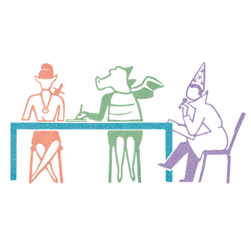

Mit der Academy erhaltet ihr im Business-Plan praxisnahe Lernmodule rund um Facilitation und wirksame Transformation.
Gemeinsam mit 9 Spaces zeigt Plan International Deutschland, wie wertebasiertes Arbeiten Orientierung gibt – nach innen wie nach außen.

Ein Tool, das euch dabei hilft, verteilte Führung mithilfe von Standard-Rollen spielerisch auszuprobieren.
Ein Template, das dir dabei hilft, richtig gute Meetings vorzubereiten.
Dieses Tool hilft euch dabei, typische Verhaltensmuster in Meetings zu reflektieren und zu ändern.
Ein Tool, das Teams dabei hilft, Variablen für richtig gute Meetings zu definieren und Meeting-Regeln abzuleiten.